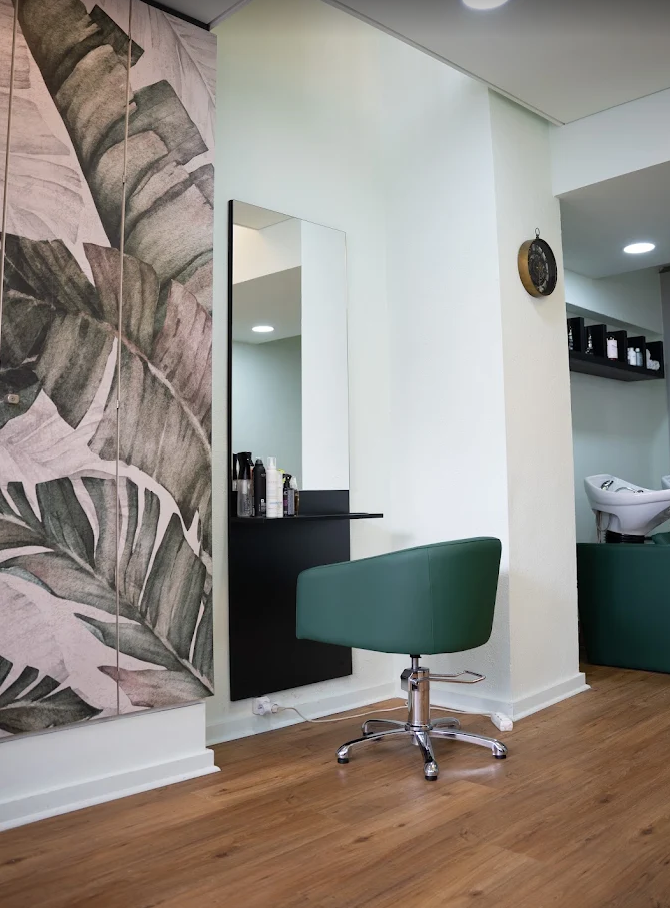

Lisboa · Largo do Rato
Estética e saúde, junto ao Rato.
Tratamentos de pele, sobrancelhas, pestanas e micropigmentação. Cada sessão é pensada para o que o rosto precisa naquele momento.
Rua de São Filipe Néri 25B
O espaço
Um espaço calmo, a dois passos do Rato.
Madeira clara, luz suave e o lírio da marca. O atelier da Niky Pop fica na Rua de São Filipe Néri, junto ao Largo do Rato.
Limpeza de pele, pestanas, sobrancelhas e micropigmentação. O protocolo ajusta-se ao estado da pele em cada visita.
-
Morada
Rua de São Filipe Néri 25B
1250-226 Lisboa - Telefone 21 194 4983
- WhatsApp 968 794 656

Menu
Os tratamentos
Consulte o menu ou descreva o que pretende melhorar. Indicamos o tratamento mais adequado.
Aviso: preços e textos de exemplo. A cliente pode mudar, tirar ou acrescentar o que quiser.
Críticas
As avaliações reais serão publicadas aqui. Os textos abaixo são apenas exemplos de tom.
Aviso: exemplos provisórios. Depois entram as críticas reais da cliente.
Agenda
Horário de funcionamento
De segunda a sexta, das 9h às 19h. Sábado até às 17h. Domingo encerrado.
Horário de exemplo — ajusta-se quando a cliente quiser.
O salão
O salão
Abra o cartão para ver a fachada, a sala de espera, as estações de tratamento e o lounge.
Agenda
Marque a sua sessão.
Envie uma mensagem no WhatsApp com o tratamento e o horário pretendido.
Pedir marcaçãoAgenda
Pedido de marcação
Indique o tratamento e o dia pretendido no WhatsApp. Se preferir, pode ligar.
Niky Pop · Estética e Saúde
Rua de São Filipe Néri 25B
1250-226 Lisboa
Telefone: 21 194 4983
WhatsApp: 968 794 656
Contactos desta demonstração. Qualquer dado pode mudar.